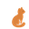

Page Cat
Call the cat here
Show on every site
Hide on
this site
Look
Size
Girth
Coat
Pattern
Calico cats are white with orange and black patches, so the coat color doesn't apply.
Behavior
Energy
Moods change over time
Plays with icons and words
Notices your cursor